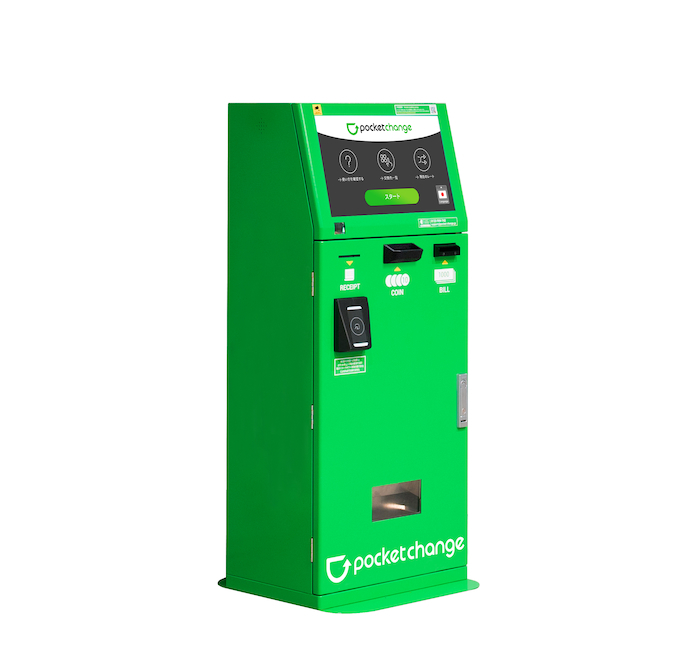

PocketChange Travel Kiosk
PCB design and firmware (C, C++, JavaScript)
The PocketChange Travel kiosk is a device that allows travellers to exchange international currencies (coins and bills) for gift cards in their home country. This is especially useful for those with currencies from several countries or those that have coins that cannot be exchanged.

My specific contributions to this project include
- PCB design modifications to an in-production 4-layer board (designed in KiCad). Modified circuit to allow remote software control of power to all peripheral devices. Reduced ESD in PCB by isolating circuits on the board and improving filters.
- Modified and wrote firmware embedded on an STM32 microcontroller to interface with the bill validator, coin counting device, accelerometer, secure door, and coin acceptor devices (C, C++). Rewrote firmware so that each device communicated over its own channel, allowing for DMA memory writing. This revision reduced the amount of device-related errors by 80%.
- Code to control each device and interface with the client application (JavaScript). Wrote code in a large codebase to allow device-specific control from the client application (rewrote protocol so each device could be individually accessed).
- Virtual Devices for PC testing (JavaScript). Improved testing to allow some devices to use virtual devices while others use physical devices.
- Wrote some UI within a large codebase to allow kiosk maintainer control over peripheral devices and access to their health.
Notes about this project: Within the first month of my first full-time engineering position, I had created drastic modifications to a PCB design, firmware, and client application software in a large codebase to interface with the new additions to the kiosk. Each of these changes entered production. I am proud of my accomplishments with this time-limited, fast-paced project, especially as it was my first exposure to life as an engineer.